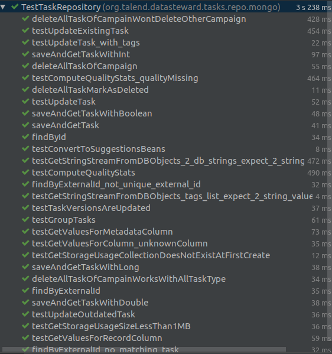
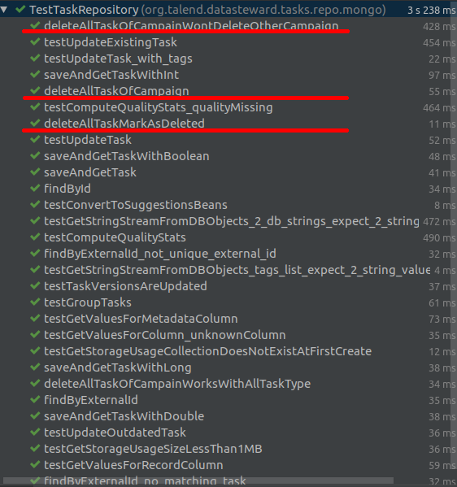
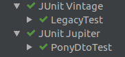
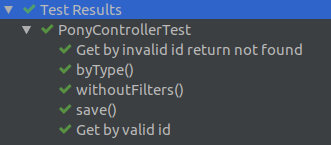
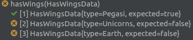
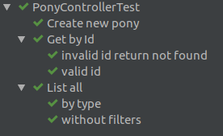

assertEquals("Must contain 2 ponies", 2, ponies.size());Unit toolkit
From legacy
Junit 4
Springboot test
Mockito
Good unit test
Independent and isolated
Repeatable
Fast
Descriptive
Good unit test
Independent and isolated
Repeatable
Fast
Descriptive
Descriptive coverage
Which tests covers deleteAll function?
Mixed

Mixed

Descriptive errors
What is the error?
Descriptive errors
.
.
.Descriptive errors
assertEquals("Must contain 2 ponies", 2, ponies.size());java.lang.AssertionError: Must contain 2 ponies
Expected :2
Actual :1Eight Gates of unit

Open Gate
Moving to junit 5
Dependency
testCompile("junit:junit:4.12")Dependency
testCompile("org.junit.jupiter:junit-jupiter-api:5.4.2")
testRuntime("org.junit.jupiter:junit-jupiter-engine:5.4.2")Engines
testRuntime("org.junit.vintage:junit-vintage-engine:5.4.2")testRuntime("org.junit.jupiter:junit-jupiter-engine:5.4.2")
Energy Gate
Import
import org.junit.Test;.Import
import org.junit.Test;import org.junit.jupiter.api.Test;RunWith and Rules
@Rule @RunWith @ClassRule
RunWith and Rules
@Rule @RunWith @ClassRule
@ExtendWith
Exception
@Test(expected = MyException.class)
// MyTestException
MyException e = assertThrows(
MyException.class,
() -> service.save(ponyDto));Ignore
@Ignore
Disabled
@Disabled
@DisabledOnOs(OS.WINDOWS)
@DisabledOnJre(JRE.JAVA_8)
Life Gate
Class with hundred of tests
Messy
class PonyControllerTest {
@Test
void withoutFilters() throws Exception { ... }
@Test
void byType() throws Exception { ... }
@Test
void create() throws Exception { ... }
...
}Nested
class PonyControllerTest {
@Nested
class ListAll {
@Test
void withoutFilters() throws Exception { ... }
@Test
void byType() throws Exception { ... }
}
@Nested
class Create { ... }
}Nested

Nested
Slow
// default @TestInstance(Lifecycle.PER_METHOD)
class PonyServiceTest {
private SlowToCreate service = new SlowToCreate();
}ClassTest
@TestInstance(Lifecycle.PER_CLASS)
class PonyServiceTest {
private SlowToCreate service = new SlowToCreate();
}ClassTest global
// junit-platform.properties
junit.jupiter.testinstance.lifecycle.default = per_classWound Gate
Understand the error
assertEquals(2, myList.size());
assertEquals("Rainbow Dash", myList.get(0).getName());
assertEquals("Pinkie Pie", myList.get(1).getName());org.opentest4j.AssertionFailedError:
Expected :2
Actual :1Wound Gate
Understand the error
assertEquals(2, myList.size());
assertEquals("Rainbow Dash", myList.get(0).getName());
assertEquals("Pinkie Pie", myList.get(1).getName());org.opentest4j.AssertionFailedError:
Expected :2
Actual :1Wound Gate
Understand the error
assertEquals(2, myList.size());
assertEquals("Rainbow Dash", myList.get(0).getName());
assertEquals("Pinkie Pie", myList.get(1).getName());org.opentest4j.AssertionFailedError:
Expected :Rainbow Dash
Actual :Pinkie PieAssertJ
Fluent assertions for java
Collection
assertThat(myList)
.contains(pinkiePie, rainbowDash);.
.Collection
assertThat(myList)
.contains(pinkiePie, rainbowDash);assertThat(myList)
.containsExactlyInAnyOrder(pinkiePie, rainbowDash);Collection
java.lang.AssertionError:
Expecting:
<[PonyDto{id='null', name='Pinkie Pie', type=null},
PonyDto{id='null', name='Big McIntosh', type=null}]>
at bzh.MyTest.test(MyTest.java:25)Collection
java.lang.AssertionError:
Expecting:
<[PonyDto{id='null', name='Pinkie Pie', type=null},
PonyDto{id='null', name='Big McIntosh', type=null}]>
to contain exactly in any order:
<[PonyDto{id='null', name='Pinkie Pie', type=null},
PonyDto{id='null', name='Rainbow Dash', type=null}]>
at bzh.MyTest.test(MyTest.java:25)Collection
java.lang.AssertionError:
Expecting:
<[PonyDto{id='null', name='Pinkie Pie', type=null},
PonyDto{id='null', name='Big McIntosh', type=null}]>
to contain exactly in any order:
<[PonyDto{id='null', name='Pinkie Pie', type=null},
PonyDto{id='null', name='Rainbow Dash', type=null}]>
elements not found:
<[PonyDto{id='null', name='Rainbow Dash', type=null}]>
at bzh.MyTest.test(MyTest.java:25)Collection
java.lang.AssertionError:
Expecting:
<[PonyDto{id='null', name='Pinkie Pie', type=null},
PonyDto{id='null', name='Big McIntosh', type=null}]>
to contain exactly in any order:
<[PonyDto{id='null', name='Pinkie Pie', type=null},
PonyDto{id='null', name='Rainbow Dash', type=null}]>
elements not found:
<[PonyDto{id='null', name='Rainbow Dash', type=null}]>
and elements not expected:
<[PonyDto{id='null', name='Big McIntosh', type=null}]>
at bzh.MyTest.test(MyTest.java:25)Equals
.
..
.Equals
assertThat(fromDB)
.isEqualToIgnoringGivenFields(expected, "id");.
.Equals
assertThat(fromDB)
.isEqualToIgnoringGivenFields(expected, "id");assertThat(fromDB)
.isEqualToComparingFieldByField(expected);Chaining
assertThat(fellowshipOfTheRing).hasSize(9)
.contains(frodo, sam)
.doesNotContain(sauron);Forest Gate
Multiple input/output
.
.
.
.
.
.Forest Gate
Multiple input/output
@Test
public void hasWings() {
assertTrue(service.hasWings(Pegasi));
}Forest Gate
Multiple input/output
@Test
public void hasWings() {
assertTrue(service.hasWings(Pegasi));
assertFalse(service.hasWings(Unicorns));
}Forest Gate
Multiple input/output
@Test
public void hasWings() {
assertTrue(service.hasWings(Pegasi));
assertFalse(service.hasWings(Unicorns));
assertFalse(service.hasWings(Earth));
}ParameterizedTest
@ParameterizedTest
@EnumSource(FlyingType.class)
void hasWings(FlyingType type) {
assertTrue(service.hasWings(type))
}ParameterizedTest
@ParameterizedTest
@MethodSource("hasWingsSource")
void hasWings(HasWingsData data) {
assertThat(service.hasWings(data.type)).isEqualTo(data.expected);
}.
.
.
.
.
.
.ParameterizedTest
@ParameterizedTest
@MethodSource("hasWingsSource")
void hasWings(HasWingsData data) {
assertThat(service.hasWings(data.type)).isEqualTo(data.expected);
}private Stream<HasWingsData> hasWingsSource() {
return Stream.of(
new HasWingsData(Pegasi, true),
new HasWingsData(Unicorns, false),
new HasWingsData(Earth, false)
);
}ParameterizedTest

View Gate
myTestWithANameThatSayWhatItDoes()
DisplayName
@DisplayName("Map pony list to ponyDto list")
void mapPonyListToPonyDtoList() { }DisplayName
@Nested
@DisplayName("List all")
class ListAll { }DisplayName

Insanity Gate
Use kotlin
Backticks
Method name is the new DisplayName
@Test @DisplayName("Map pony list to ponyDto list")
void mapPonyListToPonyDtoList { }Backticks
Method name is the new DisplayName
@Test
fun `Map pony list to ponyDto list`() { }Default object builder
Pony pinkie = new Pony("Pinkie Pie", Earth)
Pony bigM = new Pony("Big McIntosh", Earth)Default object builder
fun newPony(name: String = "Pinkie Pie",
type: PonyType = Earth) {
return Pony(name, type)
}.
.
.
.Default object builder
fun newPony(name: String = "Pinkie Pie",
type: PonyType = Earth) {
return Pony(name, type)
}fun myTest() {
val pinkie = newPony()
}Default object builder
fun newPony(name: String = "Pinkie Pie",
type: PonyType = Earth) {
return Pony(name, type)
}fun myTest() {
val pinkie = newPony()
val bigM = newPony(name = "Big McIntosh")
}Default object builder
fun newPony(name: String = "Pinkie Pie",
type: PonyType = Earth) {
return Pony(name, type)
}fun myTest() {
val pinkie = newPony()
val bigM = newPony(name = "Big McIntosh")
val flying = newPony(type = Pegasi)
}Easy parametrize test
class HasWingsData {
public PonyType type;
public boolean expected;
public HasWingsData(PonyType type, boolean expected) {
this.type = type;
this.expected = expected;
}
@Override
public String toString() {
return "HasWingsData{" +
"type=" + type +
", expected=" + expected +
'}';
}
}Easy parametrize test
data class HasWingsData(val pony:Pony, val expected:Boolean)Easy parametrize test
private fun hasWingsSource() = Stream.of(
HasWingsData(newPony(type=Earth), false),
HasWingsData(newPony(type=Pegasi), true)
)Death Gate
Package private
Tag
Mockk
Assertk
Mutation testing
TL;DR
Show love with your tests!
Organize them
Make them talk friendly
Find your preferred toolbox
Questions
Thanks
Source code and slide can be found on https://github.com/Zomzog/unitEvolution